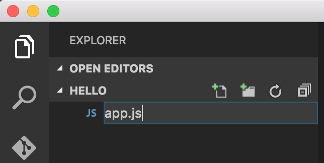
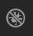
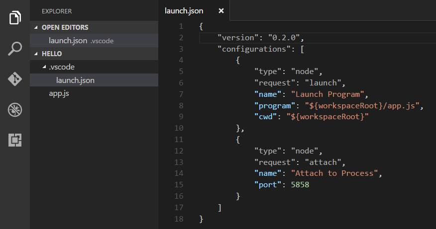

Node.js is a platform for building fast and scalable server applications using JavaScript. Node.js is the runtime and NPM is the Package Manager for Node.js modules.
VS Code has support for the JavaScript and TypeScript languages out-of-the-box as well as Node.js debugging. However, to run a Node.js application, you will need to install the Node.js runtime on your machine.
To get started in this walkthrough, install Node.js for your platform. The Node Package Manager is included in the Node.js distribution. You’ll need to open a new terminal (command prompt) for the node and npm command line tools to be on your PATH.
Linux: There are specific Node.js packages available for the various flavors of Linux. See Installing Node.js via package manager to find the Node.js package and installation instructions tailored to your version of Linux.
Tip: To test that you’ve got Node.js correctly installed on your computer, open a new terminal and type
node --helpand you should see the usage documentation.
Hello World
Let’s get started by creating the simplest Node.js application, “Hello World”.
Create an empty folder called “hello”, navigate into and open VS Code:
|
Tip: You can open files or folders directly from the command line. The period ‘.’ refers to the current folder, therefore VS Code will start and open the
Hellofolder.
From the File Explorer tool bar, press the New File button:
and name the file app.js:

By using the .js file extension, VS Code interprets this file as JavaScript and will evaluate the contents with the JavaScript language service.
Create a simple string variable in app.js and send the contents of the string to the console:
|
Note that when you typed console. IntelliSense on the console object was automatically presented to you. When editing JavaScript files, VS Code will automatically provide you with IntelliSense for the DOM.
Also notice that VS Code knows that msg is a string based on the initialization to 'Hello World'. If you type msg. you’ll see IntelliSense showing all of the string functions available on msg.
After experimenting with IntelliSense, revert any extra changes from the source code example above and save the file (⌘S (Windows, Linux Ctrl+S)).
Running Hello World
It’s simple to run app.js with Node.js. From a terminal, just type:
|
You should see “Hello World” output to the terminal and then Node.js returns.
Integrated Terminal
VS Code has an integrated terminal which you can use to run shell commands. You can run Node.js directly from there and avoid switching out of VS Code while running command line tools.
View > Integrated Terminal (⌃` (Windows, Linux Ctrl+`) with the backtick character) will open the integrated terminal and you can run node app.js there:
For this walkthrough, you can use either an external terminal or the VS Code integrated terminal for running the command line tools.
Debugging Hello World
As mentioned in the introduction, VS Code ships with a debugger for Node.js applications. Let’s try debugging our simple Hello World application.
To set a breakpoint in app.js, put the editor cursor on the first line and press F9 or simply click in the editor left gutter next to the line numbers. A red circle will appear in the gutter.
We now need to configure the debugger for this simple workspace. Select the Debug View in the Side Bar:

Click on the Configure gear icon at the top of the Debug view to create a default launch.json configuration file and select Node.js as the Debug Environment. This configuration file lets you specify how to start the application, what arguments to pass in, the working directory, and more. The new launch.json file is created in a VS Code specific .vscode folder in root of your workspace.

With the default Node.js Launch Program configuration created, you can now click Debug tool bar green arrow or press F5 to launch and debug “Hello World”. Your breakpoint will be hit and you can view and step through the simple application. Notice that VS Code displays an orange Status Bar to indicate it is in Debug mode and the DEBUG CONSOLE is displayed.
Now that you’ve seen VS Code in action with “Hello World”, the next section shows using VS Code with a full-stack Node.js web app.
Note: We’re done with the “Hello World” example so navigate out of that folder before you create an Express app. You can delete the “Hello” folder if you wish as it is not required for the rest of the walkthrough.
Express
Express is a very popular application framework for building and running Node.js applications. You can scaffold (create) a new Express application using the Express Generator tool. The Express Generator is shipped as an NPM module and installed by using the NPM command line tool npm.
Tip: To test that you’ve got
npmcorrectly installed on your computer, typenpm --helpfrom a terminal and you should see the usage documentation.
Install the Express Generator by running the following from a terminal:
|
The -g switch installs the Express Generator globally on your machine so you can run it from anywhere.
We can now scaffold a new Express application called myExpressApp by running:
|
This creates a new folder called myExpressApp with the contents of your application. To install all of the application’s dependencies (again shipped as NPM modules), go to the new folder and execute npm install:
|
At this point, we should test that our application runs. The generated Express application has a package.json file which includes a start script to run node ./bin/www. This will start the Node.js application running.
From a terminal in the Express application folder, run:
|
The Node.js web server will start and you can browse to http://localhost:3000 to see the running application.
Great Code Editing Experiences
Close the browser and from a terminal in the myExpressApp folder, stop the Node.js server by pressing CTRL+C.
Now launch VS Code:
|
Note: If you’ve been using the VS Code integrated terminal to install the Express generator and scaffold the app, you can open the
myExpressAppfolder from your running VS Code instance with the File > Open Folder… command.
The Node.js and Express documentation does a great job explaining how to build rich applications using the platform and framework. Visual Studio Code will make you more productive developing these types of applications by providing great code editing and navigation experiences.
Open the file app.js and hover over the Node.js global object __dirname. Notice how VS Code understands what __dirname is. Even more interesting, you can get full IntelliSense against the Node.js framework. For example, you can require http and get full IntelliSense against the http class as you type in Visual Studio Code.
VS Code uses TypeScript definition files (for example node.d.ts) to provide metadata to VS Code about the JavaScript based frameworks you are consuming in your application. Because TypeScript definition files are written in TypeScript, they can express the data types of parameters and functions, allowing VS Code to provide a rich IntelliSense experience. Thanks to a feature called Automatic Typing Acquisition you as user do not have to worry about these typings file, VS Code will install them automatically for you.
You can also write code that references modules in other files. For example, in app.js we require the ./routes/index module, which exports an Express.Router class. If you bring up IntelliSense on routes, you can see the shape of the Router class.
Debugging your Express Application
Just as we did earlier for “Hello World”, you will need to create a debugger configuration file launch.json for your Express application. Click on the Debug icon in the View Bar and then the Configure gear icon at the top of the Debug view to create a default launch.json file. Again select the Node.js environment. When the file is first created, VS Code will look in package.json for a start script and will use that value as the program (which in this case is ${workspaceRoot}/bin/www) for the Launch Program configuration. A second Attach to Process configuration is also created to show you how to attach to a running Node.js application.
|
Save the new file and make sure Launch Program is selected in the configuration dropdown at the top of the Debug view. Open app.js and set a breakpoint near the top of the file where the Express app object is created by clicking in the gutter to the left of the line number. Press F5 to start debugging the application. VS Code will start the server in a new terminal and hit the breakpoint we set. From there you can inspect variables, create watches, and step through your code.
Node.js Extensions
The community is continually developing more and more valuable extensions for Node.js. Here are some of the extensions we have found most useful.
- JavaScript (ES6) code snippets - Snippets for JavaScript in ES6 syntax.
- ESLint - Integrates ESLint into VS Code.
- JSHint - Integrates JSHint into VS Code.
- Add JSDoc comments - Adds JSDoc @param and @return tags for selected function signatures in JS and TS.
- Beautify - This extension enables running js-beautify in VS Code.
Here are some popular extensions from the Marketplace.
Tip: The extensions shown above are dynamically queried. Click on an extension tile above to read the description and reviews to decide which extension is best for you. See more in the Marketplace.
Next Steps
There is much more to explore with Visual Studio Code, please try the following topics:
- Settings - Learn how to customize VS Code for how you like to work.
- Debugging - This is where VS Code really shines
- Editing Evolved - Lint, IntelliSense, Lightbulbs, Peek and Go to Definition and more
- Tasks - Running tasks with Gulp, Grunt and Jake. Showing Errors and Warnings
Common Questions
Q: Do I need to define a jsconfig.json file?
A: Without a jsconfig.json file in the workspace root folder, VS Code treats all files and folders as belonging to the same project context. This is sufficient for common setups. There are situations when you want to add a jsconfig.json file.
For example:
- When not all JavaScript files should be part of the project context, for example, you want to exclude some files, then you can define which files to exclude in the
jsconfig.jsonfile. - When a workspace contains more than one project context, then you should add a
jsconfig.jsonfile at the root folder for each project. - When you are using the TypeScript compiler to down-level compile JavaScript source code.
More information about the configuration options for a jsconfig.json can be found in jsconfig.json reference.